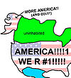

De: La Frikipedia, la enciclopedia extremadamente seria.
De: La Frikipedia, la enciclopedia extremadamente seria. De: La Frikipedia, la enciclopedia extremadamente seria.
| De la serie Países del planeta tierra: | |||||
| Campos unidos de ielo norte de Estados Unidos, Canadá y Rusia | |||||
|---|---|---|---|---|---|
| |||||
| Lema: Paco, me has dejao elao!!!! | |||||
| Himno: Se puede escuchar durante 5 minutos las hojas de los arboles, ese es el himno.
| |||||
| 
| |||||
| Capital | El iglu del super esquimal supremo. | ||||
| Mayor ciudad | Cinco o seis iglus juntos. | ||||
| Lenguas oficiales | una mezcla de ruso totalmente incomprensible, y la lengua nativa de cada familia de esquimales. | ||||
| Gobierno | He? | ||||
| Super esquimal supremo. | Kefri Ohace Aki | ||||
| Área | Siberia | ||||
| Población | 50000 prisioneros de la Guerra Fría, 700 terroristas prófugos y una familia de esquimales nativos por cada 1000 kilómetros a la redonda | ||||
| Moneda | grasa de cubitos. | ||||
| Zona horaria | su reloj se congelo hace tiempo. | ||||
| Dominio Internet | .internet, que es eso? | ||||
| Código telefónico | sus líneas están congeladas.
| ||||
| Actualmente sigue en la guerra fría contra el buen tiempo | |||||
Alaska es un pedazo de rusos de los yanquis, junto a Canadá.
Alaska era originalmente la hermana más baja y más gorda de Siberia.
Ahí Alaska por fin estaba en soledad que se hacía cada día menos soportable. Necesitaba estar cerca de alguien para darle unas cuantas caricias que la comprendiera, enfriara, entretuviera, complazca, amara, etc. Además se estaba comenzando a fundir.
Por lo tanto se las ingenió para salir de ahí sin ser descubierta (hemos de destacar que era buena para hacer manualidades), separo Asia con un clip, una goma elastica, un destornillador y una lupa, y se acomplo de mala manera.
Esa noche Alaska se encontró de golpe y vaya que le dolió con los Estados Unidos de América. Afortunadamente Estados Unidos también era un país cachondo y logró evitar que Alaska se terminara de fundir (ya casi se hacía líquido pero eso era lo que menos le importaba porque sabemos el tipo de país que es Estados Unidos y sólo estaba por el sexo).
Fue así como los Estados Unidos de América y Alaska siguieron copulando y decidieron casarse por lo bajinis, pero encontraron dificultades en el contrato del matrimonio, asi que EE.UU mato al parroco, al civil, al carnicero, y ya que habia sacado las armas, conquisto dos o tres paises. Al final le caso un vagabundo a cambio de unos zapatos de tacón y un chusco de pan.Hasta entonces todo marchaba bien.
Pero una tarde Alaska descubrió a Estados Unidos en otra de sus putas andanzas a emborracharse y pelear contra Afganistán, Cuba, Vietnam y volverse muy abusivo y maltratador hasta el punto en que ella llegó a pedir el divorcio.
Actualmente Alaska todavía está casada con Estados Unidos por enlentecimentos en el trámite, además de que se casaron por una ley en que el divorcio tiene que ser bilateral, por lo que la fecha de término todavía no está definida; pero por mientras está teniendo relaciones con Canadá y Mario Vaquerizo.
Alaska es una zona del enfriamiento global en forma controlada hasta alcanzar el punto de equilibrio, sin pasarse, ya que entonces tendriamos que comprarno ropa de abrigo y estas se harian con la piel de animales y de algunos super obesos.
Alaska fue poblada durante milenios por los pegamoides, hasta la invasión por parte del imperio de Dinarama. Posteriormente y a diferencia de lo que se cree los trogloditas fueron una civilización que pobló ALASKA mucho más recientemente de lo pone en los libros de historia. Por allí por los 80 se alimentaban de calimocho, acido, amfetas y todo lo que podían exportar de malasaña, cayendo muchos en el OLVIDO, tanto por paret de sus congeneres como por la suya propia. Actualmente Alaska ha pasado a ser una reputada isla gay, alimentada de vaselina y mucho pope haciendo caer en el éxtasis gracias a sus parajes efímeros a los más nostálgicos y para los mas freaks del planeta.
Autor(es):